数据结构知识框架
第一章
第一方面：基本概念
1、数据结构研究方面（研究内容）
主要体现三个方面：
- 数据的逻辑关系
- 储存关系
- 运算关系
- 还讨论算法的效率问题，分类问题等。
2、数据结构的逻辑结构
逻辑关系：自然状态下数据元素之间的一种联系（关联方式或邻接关系，从逻辑上观察数据，与计算机无关）。
逻辑结构：对数据元素之间关系的描述B=(k，r)其中，k：数据元素的有穷集合（有限元素构成），r：k上关系的有穷集合，其中每个关系r都是从k到k的关系。
逻辑结构的分类：线性结构和非线性结构（树形结构、图形结构（网状结构））。
关于集合类型：元素之间除同属一个集合外别无其他类型
3、数据结构的存储结构
存储关系：逻辑结构在计算机存储器中实现，它依赖于计算机。具体说数据在存储器中的关联方式，也成物理结构，物理关系等。
- 顺序结构
- 链接结构
- 索引结构
- 散列（hash）结构
4、数据结构评价标准
主要标准：
- 作为问题的参数的函数来计算存储需要量
- 作为问题的参数的函数来计算时间效率
- 还需要考虑其他因素
第二章：算法（只有一个层面）
1、算法的评价标准
好算法要达到以下目标：
- 正确性（满足具体问题的要求）
- 易读性（交流与他人阅读，其次是机器执行）
- 高效性（效率与存储量的需求，达到所需的时空性能）
- 健壮性（适应环境变化，有非法输入时，能做出相应的处理或反映）
2、算法的描述方法
- 计算机程序设计语言
- 自然语言
- PDL语言（伪码语言、可运行于“抽象计算机”，虚拟机）
- 流程图
第三章：线性表（只有第三个要求）
1、线性表：一个线性表是n≥0个数据元素a1，a2，……，an的有限序列，序列中除第一个最后一个以外，每个元素都是有且仅有一个直接前驱和直接后继。
2、链表：通过指针联系起来的结点的整体（集合）。
3、静态链表：以整形变量的值作为存储连接指针值（即地址）联系起来的结点的整体。（指针本质整形值）
4、表头结点：增加一个附加结点，放置于链表的最前面，也称表头结点，且该节点不用存储数据元素。作用和目的（简化算法）。
5、存储密度：结点数据本身所占的存储量和整个结点结构所占的存储量之比。
存储密度 = （结点数据本身所占的存储量）/（结点结构所占的存储总量）
基于链表的插入删除
第四章：栈和队列（只有第三层）
1、栈：栈在计算机具体应用中，是一个特定的存储区，一端固定，一端浮动。
栈是一个下限为常数，上限可变化的（或者反之），也成为堆栈或堆阵。可变化一端为栈顶，不可变化一端为栈底
2、栈与线性表的异同：栈的插入、删除至能在一端进行，不能在任意点，栈是受限的线性表。
3、队列：队列是一个上限和下限只能增加和不能减少的向量（或反之），队首：取出元素的一端。队尾：加入元素的一端。
4、队列与线性表的异同：受限的线性表，删除和插入操作只能在特定位置。
5、假溢出（待定）：多栈共存时，有点栈已满，有的还没有满。存储区还没有满,但队列或栈却发生了溢出,我们把这种现象称为”假溢出”。
第三层次：循环队列的出入队。
循环队列的出入队 (注意！队首指向队头元素的前一个地址，队尾指向队屁股最后一个元素)
入队：
PROC REDUI(VAR CQ: ARRAY[M..N]OF DATATYPE;FRONT,REAR,X:INTERG)
BEGIN
REAR<-REAR+1
IF REAR=N+1
THEN REAR<-M
IF REAR=FRONT
THEN PRINT"CQ FULL""
ELSE CQ[REAR]<-X
END
出队：
PROC CHUDUI(VAR CQ:ARRAY[M...N]OF DATATYPE;FRONT,REAR,X:INTEGER)
BEGIN
IF FRONT=REAR
THEN PRINT"CQ EMPTY"
ELSE IF FRONT = N
THEN FRONT = M
ELSE FRONT <- FRONT+1
X <- CQ[FRONT]
END
第五章：串（只有第一层面）
1、串：一个由零个或多个字符组成的有穷序列称为串，简记A=a1a2……an。
2、串的模式匹配：假设有两个串P和S：
P=p1p2……pm S=s1s2……sn 其中（0＜m＜n）通常m<<n
在S中找出一个与P相同的子串，即串的定位。
通常把S称为目标，把P称为模式，把从目标S中查找模式P的过程称为串的模式匹配。
第六章：数组和广义表（二）
1、数组：一位数组是个向量，他的每个元素是该结构中不可分割的最小单位；n(n>1)维数组是个向量，他的每个元素是n-1维数组，且具有相同的下限和上限。
2、稀疏数组：在一个数组中和某一元素比较而言，不相同的元素很少时，我们称此数组为稀疏数组。
3、稀疏矩阵：是稀疏数组的典例。与稀疏矩阵的差别：元素分布是否有规律。
4、广义表：广义表是零个或多个原子（他是所要描述的某种数据类型的对象，是一个确定的概念）或子表所构成的有限序列，简称表。
第二层次
稀疏矩阵的两个存储方法：三元组（顺序存储）、十字链表
三元组的缺陷
- 不利于矩阵元素的变化：非零到零的删除、零到非零的添加
第七章：树形结构（二、三）
1、树：是满足以下性质的有限个结点组成的非空集合
- T中有且只有一个称为根的结点。
- 除根节点以外，其余节点分为m(m>0)个不相交的集合T1，T2……Tm，其中每个Ti都是数，而却都称为T的子树。
2、二叉树：二叉树T是满足如下性质的结点的有限集合：
- T是空集。
- 或者它包含一个根节点且其余结点分为两个不相交的集合，并分别被称为左子树和右子树，且左右子树都为二叉树。
3、遍历：对于给定数据结构，系统的访问该结构中的每个结点，且每个结点仅被访问一次的操作过程成为遍历。（会改字）
4、二叉树的遍历规则：
- 层次遍历：从上到下从左到右，布拉布拉布拉～
- 深度策略：先根遍历、中根遍历、后根遍历。
5、二叉排序树：二叉排序树或空二叉树，或者是满足以下要求的二叉树。
- 若是它的左子树非空，或者左子树上所有结点的值均小于等于根节点的值。
- 若它右子树非空，则右子树上所有结点的值均大于等于根节点的值。
- 且左右子树都为二叉排序树。
6、线索：将二叉树的空指针利用起来，用于表示某线性关系下前驱或后即的，这种指针称为线索。
7、线索树：带线索的二叉树简称为线索树。
8、霍夫曼树（最优二叉树）：按霍夫曼算法构造具有最小加权路径长度的二叉树。
9、线索化：给二叉树加线索的过程。
第二层次：
- 树、森林、二叉树相互转换
- 二叉树的前中后遍历的方法
- 二叉树加线索
- 霍夫曼树的构造和编码
- 二叉排序树的构造
1 | 二叉树的先序遍历 |
1 | 二叉树的中序遍历 |
1 | 二叉树的后序遍历 |
树到二叉树的转换：
- 加线：加横线
- 抹线：抹掉可以抹掉的所有右孩子之间的线
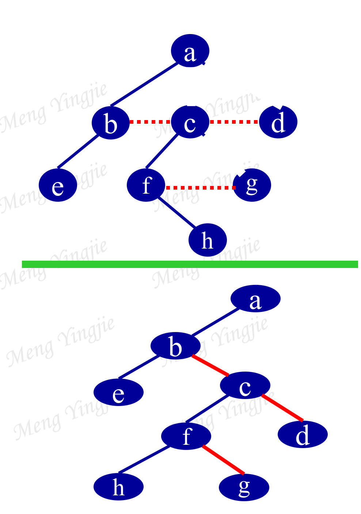
二叉树转到树：
- 加线：1.是父节点的左孩子。2.把父节点和他的右孩子和右孩子的右孩子和。。。连起来。
- 抹线：抹去所有节点和右孩子之间的线
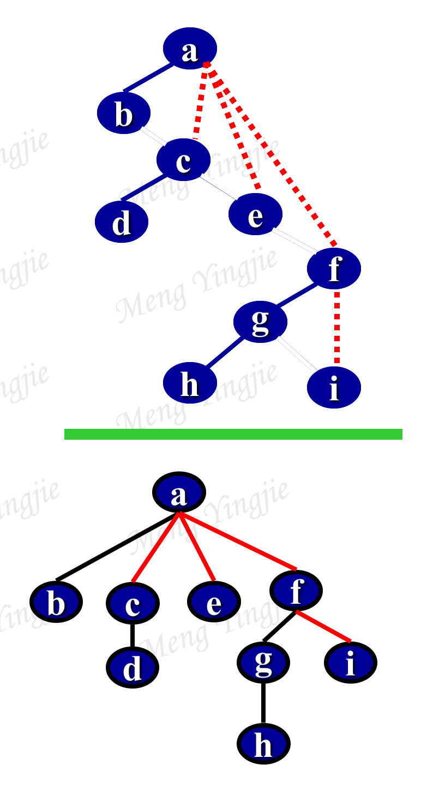
森林转化为二叉树
- 把每个树转化为二叉树
- 二叉树的连接：依据森林次序，后一棵二叉树是前一棵二叉树根节点的右子树
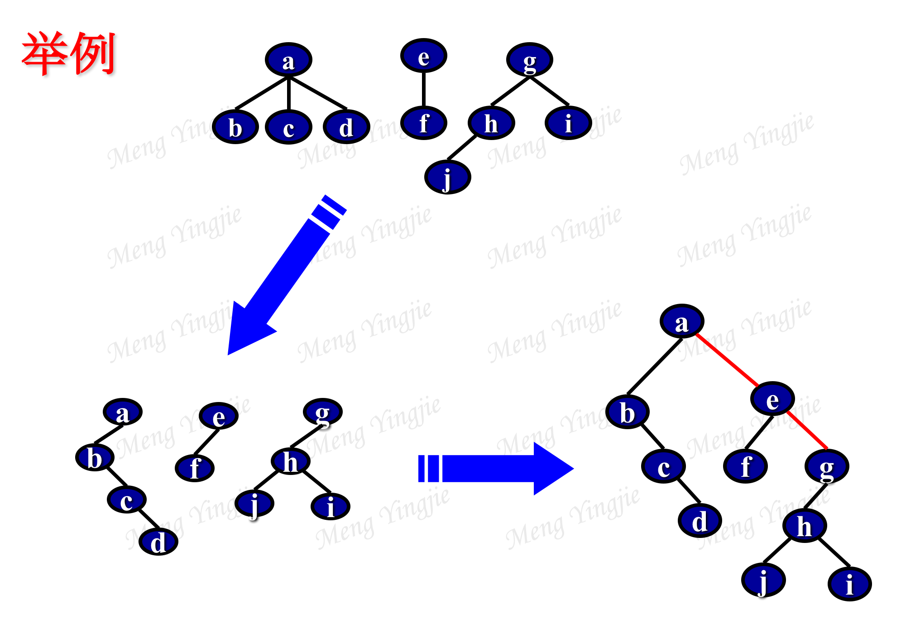
二叉树转换成森林
- 抹线：把节点的右子树都拿出来
- 还原：把每个二叉树变成树
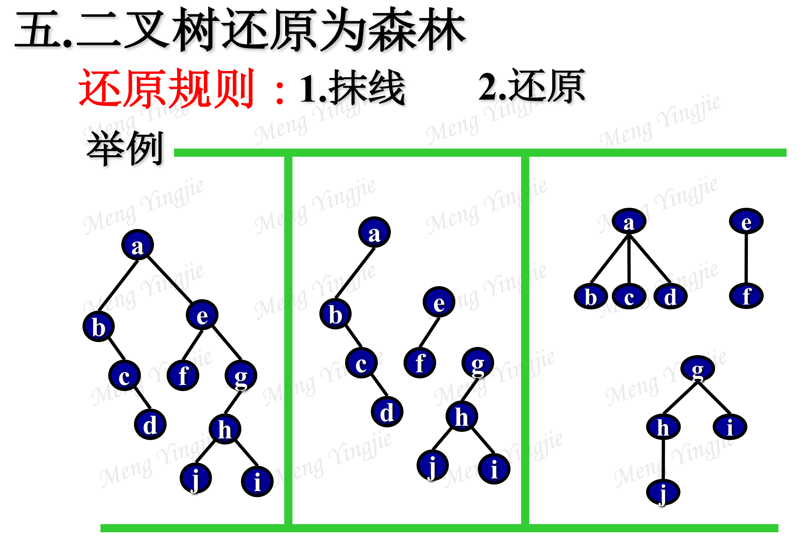
线索化
- 左孩子指向直接前驱
- 右孩子指向直接后驱
- 标志位0表示指向孩子，1表示指向线索
构造二叉树
- 节点是否为空，为空则插入
- 若小于，执行递归插入左孩子节点，到1.
- 若大于，执行递归插入右孩子节点，到1.
霍夫曼树（最优二叉树）
- 给定一组权值集合{w1, w2, …, wn}.
- 将F={T1, T2, …, Tn}按根结点的值由小到大进行排序。
- 取出T1和T2组成一棵二叉树T；再将T插入到F中，并使F依据根结点的值有序。
- 反复执行③直到F={T}为止。

霍夫曼树的编码
- 给定字符集
- 写出每个字符出现的次数组成的集合。
- 对此集合进行霍夫曼排序
- 左支为0右支为1写出每个字符的编码
第三个层次：遍历方法，两个运用一个处理
交换左右子树
PROC EXCHANGE(VAR T:BINARYTREE)
BEGIN
IF T!=NULL
THEN [SWOP(T->LSON,T->RSON)
CALL EXCHANGE(T->LSON)
CALL EXCHANGE(T->RSON)]
END
求二叉树的高度
1 | PROC HIGHT(VAR T:BINARYTREE,H) |
第八章：图结构（二）
1、图：由n(n≥1)个结点v1，v2，……，vn构成的数据G称为图。若结点集V=｛v1、v2……vn｝上定义的称为后继的关系E是非自反的，可表示为G=（V，E），其中V为顶点集，E为边集。
2、图的遍历：给出图G和其中的任意一个定点v0，从v0出发系统的访问G中所有的定点，且每个顶点（反）被访问一次，这一过程称为图的遍历。
3、图的遍历规律：广度优先遍历，深度优先遍历。
4、最小生成树：一个有 n 个结点的连通图的生成树是原图的极小连通子图，且包含原图中的所有 n 个结点，并且有保持图连通的最少的边和权重。
5、AOV网：若有向图G中，顶点表示活动或任务，有向边表示活动或任务之间的优先关系，则此有向图称为顶点表示活动网络（AOV网）。
6、AOE网：若在带权的有有向图中的顶点表示事件，有向边表示活动，权表示活动持续的时间，则此有向图称为边表示活动的网络(AOE网)。
7、拓扑排序：对于有向图G=(V,E)，V中的顶点的线性序列(Vi1,Vi2,……,Vin)，称作一个拓扑序列，若此结点序列满足如下条件；在G中从顶点u到顶点v有一条路径，则在序列中u必在v之前。寻找拓扑序列的有效手段就是进行拓扑排序。
8、关键路径：任务计划作业图上的需要时间最长的路径（可有多条），它决定完成总任务的时间。
第二个层次
- 图的邻接表和邻接矩阵的存储方法
- 图的深度和广度遍历的方法
- Prim和Kruskal算法
邻接表和邻接矩阵的表示
有向图中邻接表的表示：
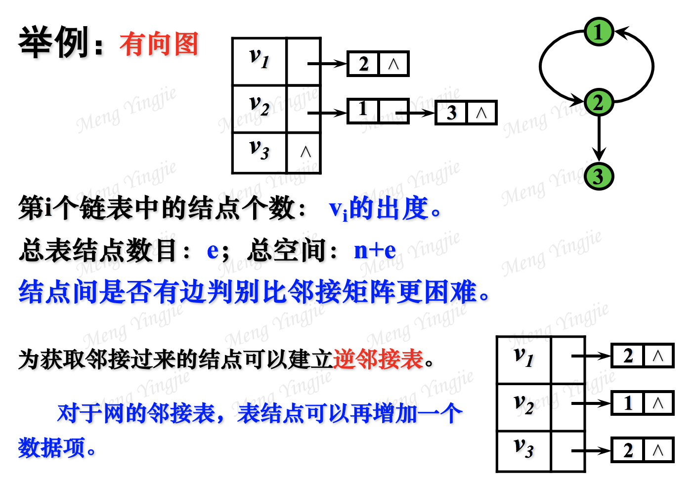
网的邻接矩阵：
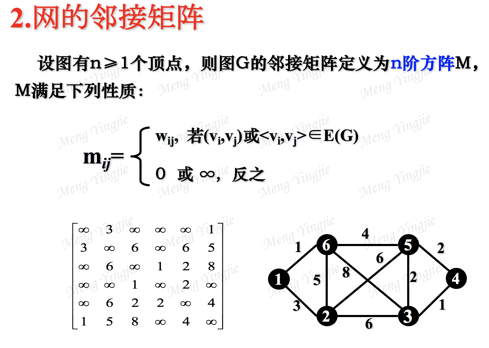
深度优先搜索
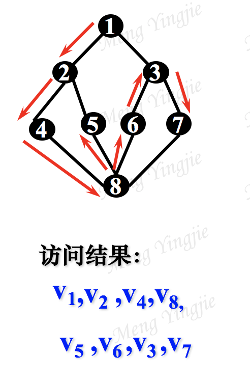
广度优先搜索
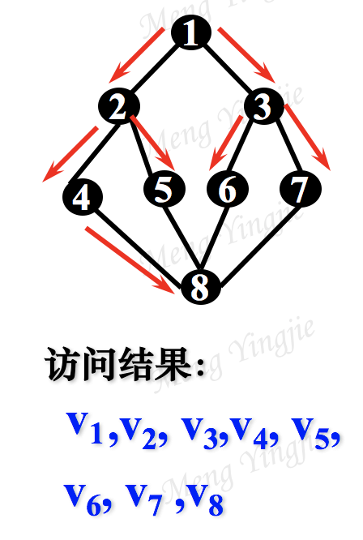
prim算法构造最小生成树
每一步都找已连通的树中权最小的边用来构造
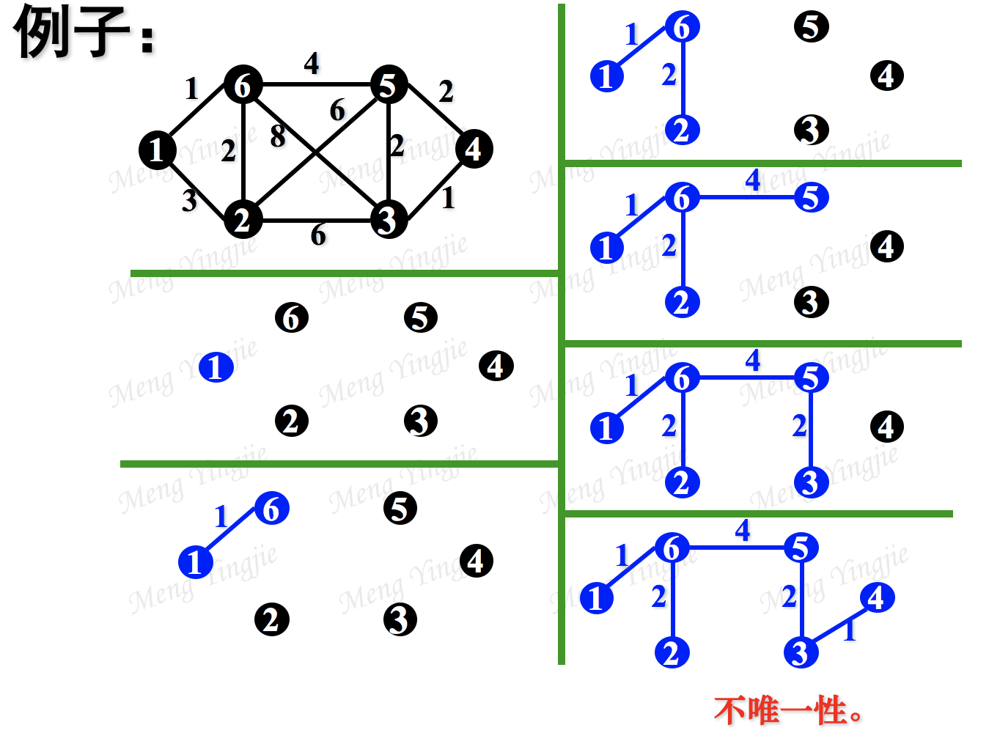
Kruskal算法构造最小生成树
按照权值递增的顺序逐个考虑E中的每条边：
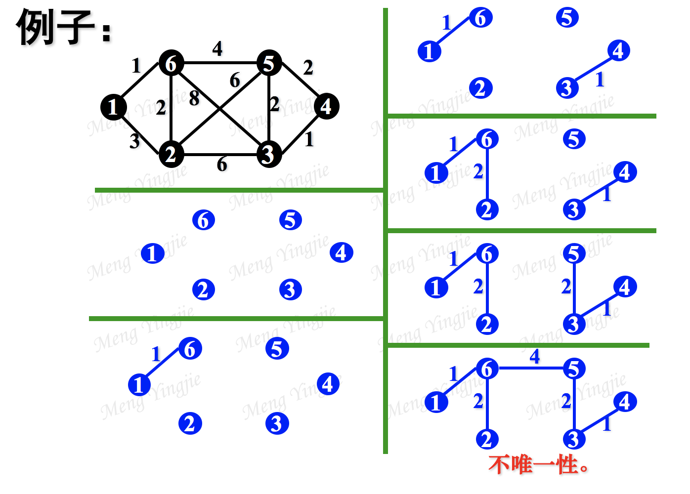
第九章：排序（二、三）
1、排序：设含有n个记录的集合为R=｛r1，r2，……，rn｝，其对应的关键字集合为k=｛k1，k2，……，kn｝，给定关系α，按照关系α针对关键字集合k对R进行运算，是的R有如下序列：
（rα1，rα2，……，rαn）
我们将这个操作过程称为排序。
2、排序分类：分为外部排序和内部排序。
内部排序包括
- 插入排序
- 交换排序
- 选择排序
- 合并排序
- 枚举排序
- 分配排序
3、排序稳定性：在排序关系下，假设排序前ri在rj之前，排序之后领先关系不变，则称此排序过程方法是稳定的，否则是不稳定的。
4、堆：设L是长度n的表，其数据元素满足：
L(i)≤L(2i)且L(i)≤L(2i+1), 1≤i≤[n/2] 或反之。
则称L是一个堆。
第二个层次
- 直接插入
- 快速排序
- 二路归并
- 基数
- 堆的构造
直接插入
从一个零集合开始，将 r 按照排序关系插入到一个已经有序的文件适当位置。
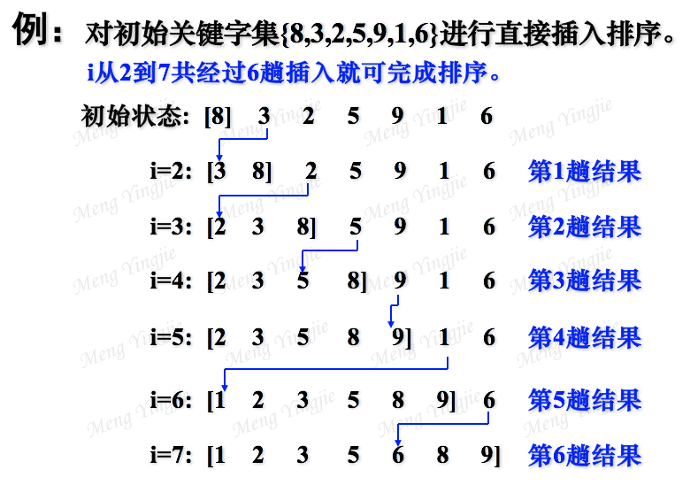
快速排序
基本方法：
PROC QuickSort(VAR R:ARRAY[1..n] OF datatype;l,p:integer);
BEGIN
IF l≥p THEN exit ;
i←l; j←p; x←R[i];
REPEAT
WHILE (x.key≤R[j].key)AND(i＜j) DO j←j-1;
IF i＜j
THEN 【 R[i]←R[j]; i←i+1;
WHILE (R[i].key＜x.key)AND(i＜j) DO i←i+1;
IF i＜j THEN【 R[j]←R[i]; j←j-1; 】
】
UNTIL i=j;
R[i]←x; i←i+1; j←j-1;
IF l＜j THEN CALL QuickSort(R, l , j);
IF i＜p THEN CALL QuickSort(R, i , p);
END;
二路插入
两个两个合并，然后四个四个合并，然后大的合并
堆的构造
1.先插入，然后往上爬。
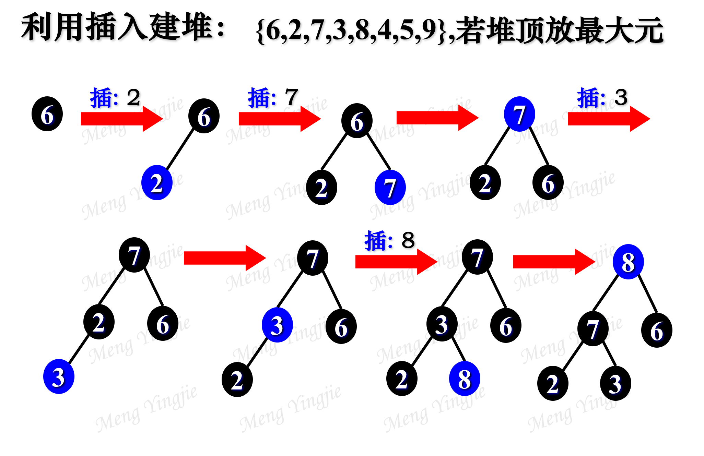
2.先排列，然后从第一半个节点开始往上爬。
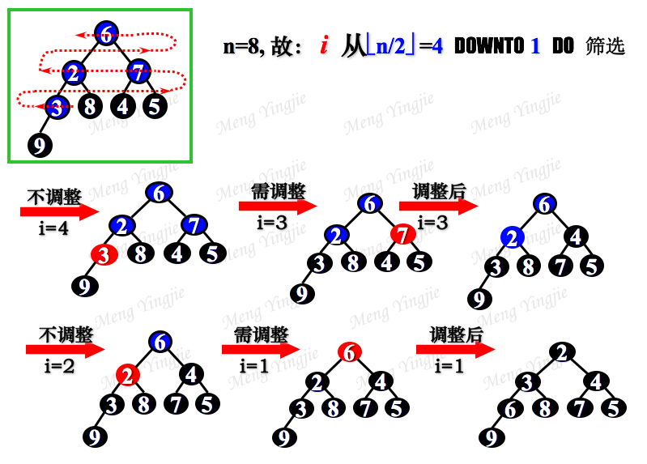
基数排序
看最低位，一次装进是个桶里，然后拿出来。
再装第二位，最后装第三位。
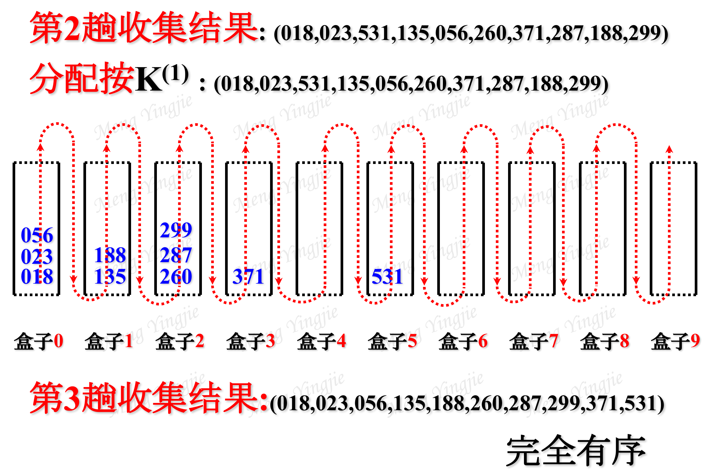
第三个层次：二分插入排序
与直接插入排序的区别：在插入第i个时搜索采用二分策略。
1 | PROC DUOSORT(VAR R:ARRAY[1..N]) |
第十章：数据检索（二、三）
1、检索：在给定数据结构中查找满足某种条件的数据元素（或节点，记录）的过程。
2、检索分类：
- 基于关键字的检索；
- 基于属性的检索；
3、平均检索长度：衡量检索算法的主要标准是检索过程中对关键字（或属性）要执行的平均运算次数。
4、AVI树：
- 一颗空二叉树是AVL树；
- 若T是一颗非空二叉树，其访问任何结点的左右子树的相差高度不超过1，则T是AVL树。
5、碰撞：依据散列函数H计算出地址，若发现此地址已经被别的结点占用，即有两个不同的关键字映射到了同一地址空间的现象。
6、散列表：是一种存储方法也是一种常见的检索方法，是按关键字编址的一种技术。用散列法组织存储的表。
7、同义词：发生碰撞的两个关键字；
8、堆集现象：在散列表中插入一个新结点y时，当然它不是先前已经插入的某个节点x的同义词，但可能会出现H（y），已经被x的同义词占用的情况，这是只能将y也链接在x的同义链中，也就是说出现了y与x的同义链结成一个的情况，把连个同义词子表结合在一起的现象称为堆集现象。
第二层次：AVL的构造
- 正常插入
- 当不满足平衡二叉树时，调整
- 调整要求中序顺序不变
- RL或LR调整要把整个x都要挪上去
举例：
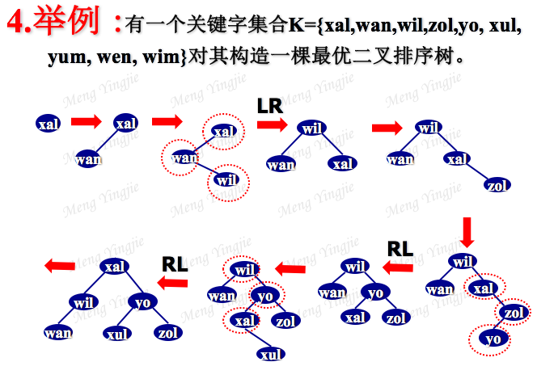
第三层次：二分检索
1 | PROC DUOSEARCH(VAR R:ARRAY[1...MAX]OF DATATYPE;N:INTEGER;K:KTYPE) |
十二章，文件
1、 文件：为了进行存取控制、检索和修改而组织在一起的数据记录集合。
2、 文件逻辑组成分类：（广义）两种：
- 字符流文件：有序的字符流序列，文件基本单位为字节或字。
- 记录文件：数据记录的集合文件基本单位为记录。
3、 文件物理组成分类：
从存储结构来看，文件的组织仅有三种：（说大的就行了）
- 顺序机构：按照数据到达的时间先后次序进行组织。按该方式组织的文件称顺序文件。
- 计算寻址结构：按照散列方式组织文件。该方式组织的文件称散列文件。
- 带索引的结构：组织数据时需要带一个索引表。称为索引文件，主要是利用树形结构组织索引。
4、 动态存储结构：是指文件创建初始装入记录时所生成的索引结构，在系统运行过程中索引结构本身能够发生改变。
5、 静态存储结构：指索引结构在文件创建，初始装入记录生成，一旦生成就固定下来，在系统运行过程中索引结构并不发生变化，只有当文件重组时菜允许改变索引结构。
6、 B+，B-树的本质：平衡的多分树。
7、 B+，B-树的作用：组织动态索引结构。
8、 ISAM文件的本质：索引顺序存取。（静态索引结构）
9、 VSAM文件的本质：虚拟存储存取。（动态索引结构）
10、 外排基本方法：归并排序。